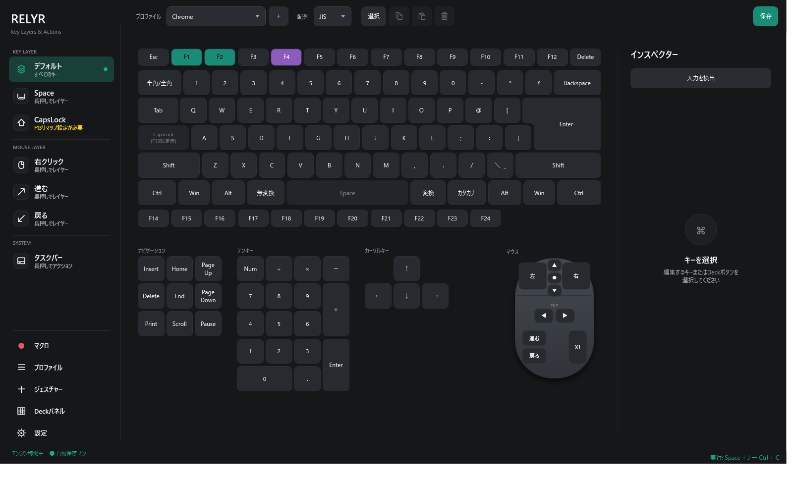
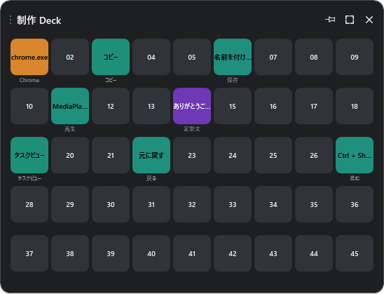

01 / LAYERS
押している間だけ、キーの役割が変わる。
Space、CapsLock、右クリック、進む、戻る。使いやすいボタンをレイヤーキーにして、いつもの操作へもう一段を追加できます。
- 通常入力には影響しない
- レイヤーごとに個別設定
- 全レイヤーへの一括割り当て
Windows 10 / 11 ・ Free
Space、CapsLock、マウスを押している間だけ、もう一つの操作レイヤーへ。ショートカットも、マクロも、Deckも、ひとつに。
v0.1.231 .NET Desktop Runtime同梱

01無料で利用可能
02入力内容を外部送信しない
03ライト・ダーク対応
04ソースコード公開
Why RELYR
RELYRは、キーボードを別物に置き換えるアプリではありません。普段の入力はそのままに、押している間だけ使える操作面を重ねます。
手を大きく動かさず、いま使っているキーやマウスから、必要な操作へ直接つなげます。
01 / LAYERS
Space、CapsLock、右クリック、進む、戻る。使いやすいボタンをレイヤーキーにして、いつもの操作へもう一段を追加できます。
02 / VISUAL EDITOR
JIS・US配列のメインキーボード、テンキー、ナビゲーション、カーソルキー、マウスをひとつの画面に整理しました。
Deck panel
アプリ、素材、URL、画像、GIF、動画をボタンへ。用途ごとのDeckを作り、必要なときだけ呼び出せます。

One app
単一キーから複数キーの組み合わせまで。
よく使う場所へ迷わずアクセス。
キーとマウスの流れを記録・編集・再生。
使用中のアプリに合わせて自動切り替え。
カーソルの方向へ操作を割り当て。
仮想デスクトップや自動解凍もまとめて。
Local first
RELYRは入力内容を外部サーバーへ送信しません。設定とマクロはローカルに保存し、マクロ記録もユーザーが開始した間だけ動作します。
操作設定はPC内で完結します。
カスタマイズした環境を保存できます。
Ctrl + Alt + Shift + F12で入力処理を停止。
MIT License。SHA-256も配布します。
Getting started
GitHub ReleasesからSetup版をダウンロードします。
画面のキーボード、マウス、Deckから対象を選びます。
実行したい操作を選んで保存すれば完了です。